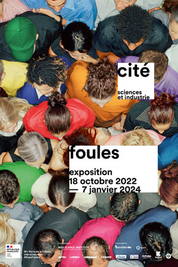
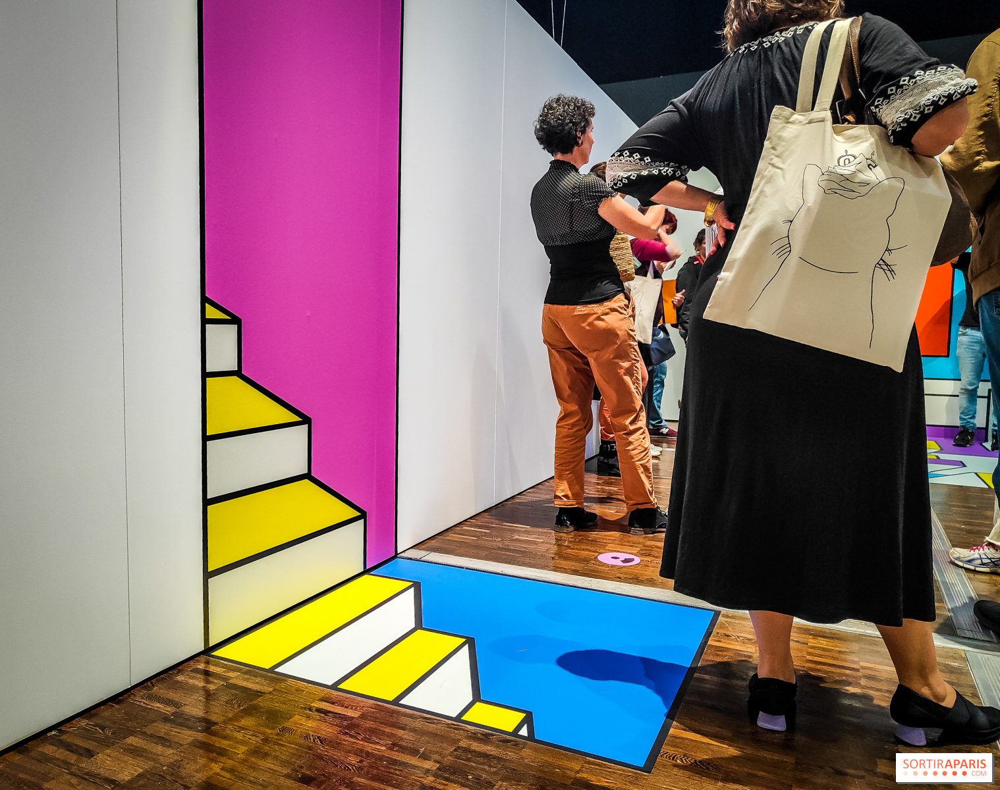
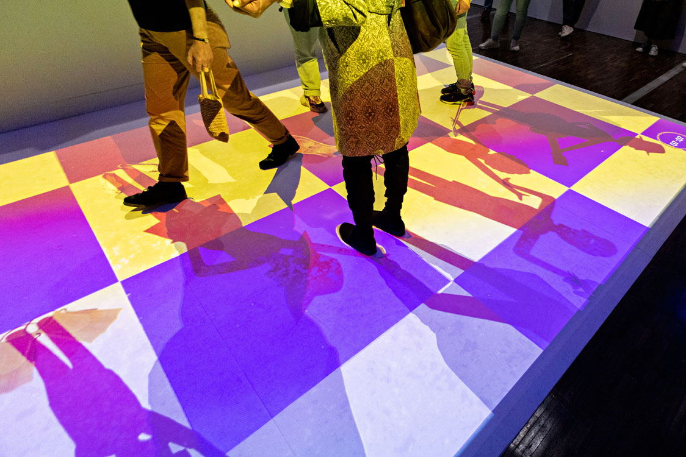
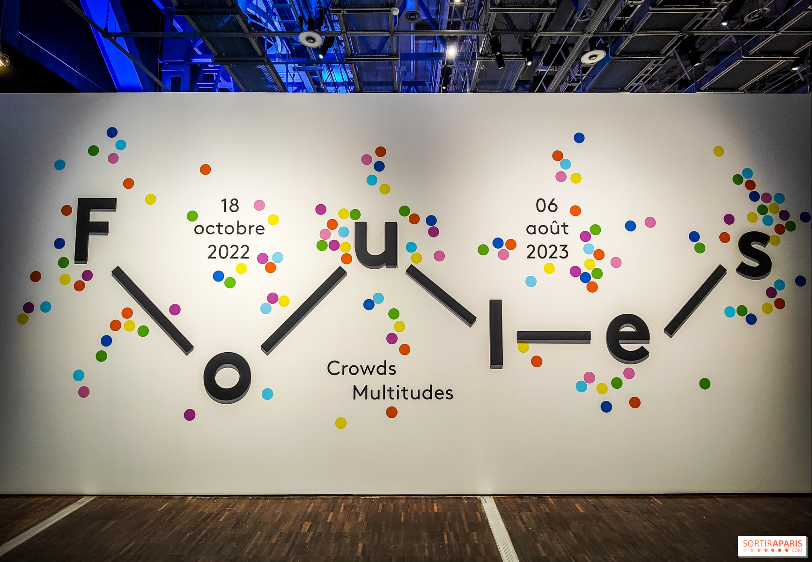

Anglais
AnglaisFOULES 2023
Découvrez le fascinant monde des foules à la Cité des Sciences,
une exposition captivante qui explore les dynamiques collectives et l'impact sociétal de ces phénomènes.

- 


- 
- 

- 

GALERIE
Découvrez le fascinant monde des foules à la Cité des Sciences,
une exposition captivante qui explore les dynamiques collectives et l'impact sociétal de ces phénomènes.
GALERIE
Normal : 13 € | Réduit : 10 € À partir de 10 ans Exposition en français, anglais et espagnol
Du Mardi au Dimanche De 10h à 18h Du 18 octobre 2022 au 7 janvier 2024
30 Avenue Corentin Cariou, 75019 Paris Métro : Ligne 7, Tramway : T3b